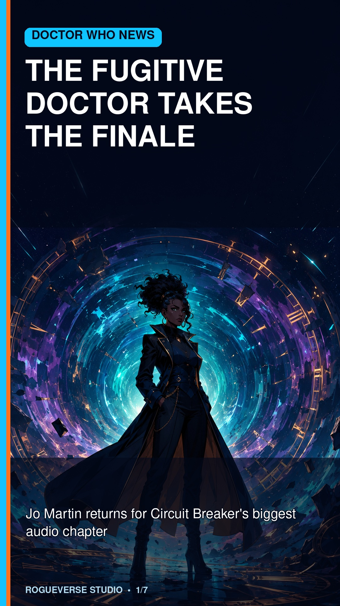
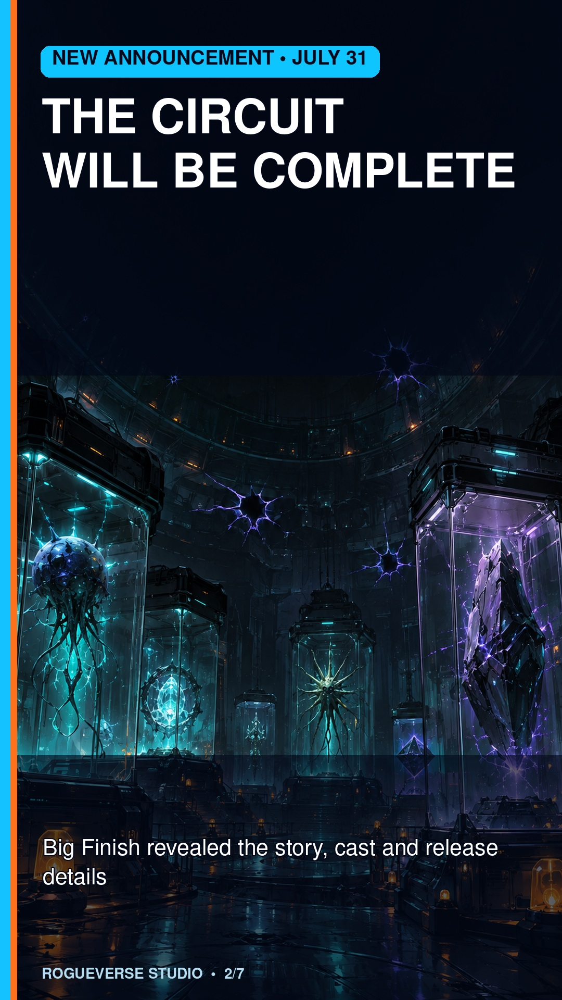
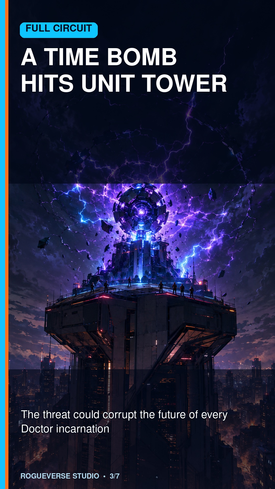
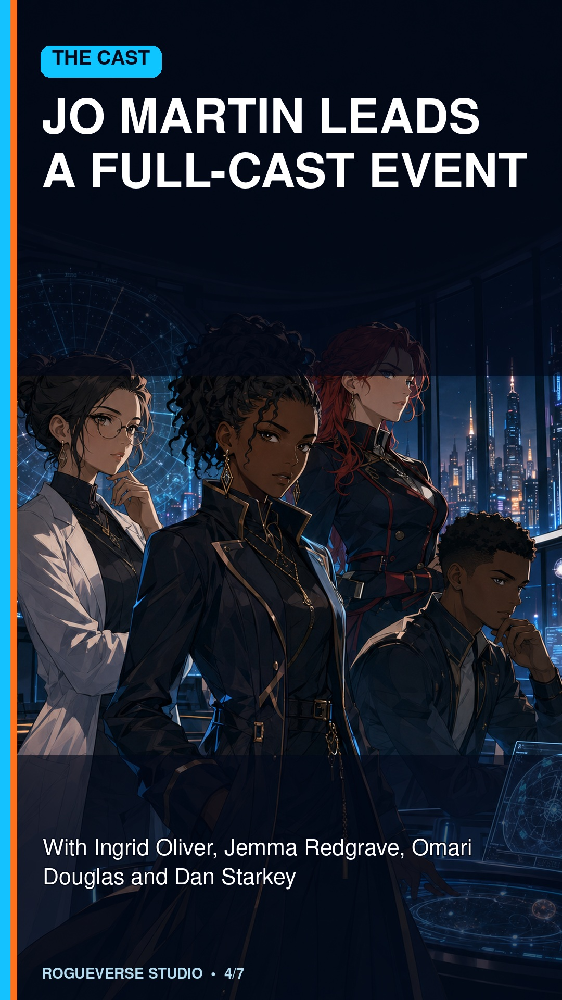
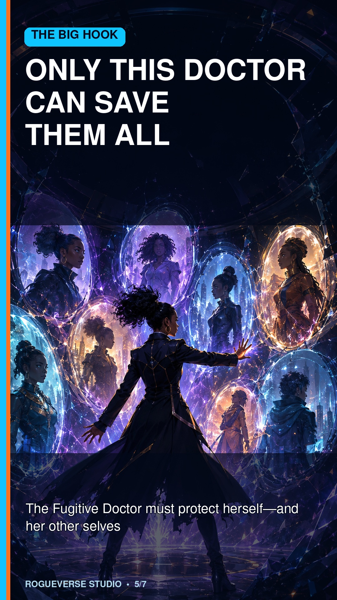
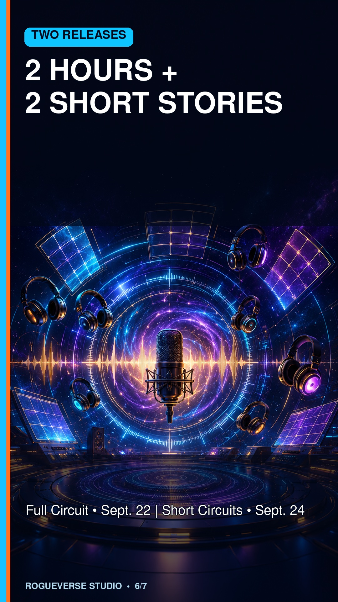
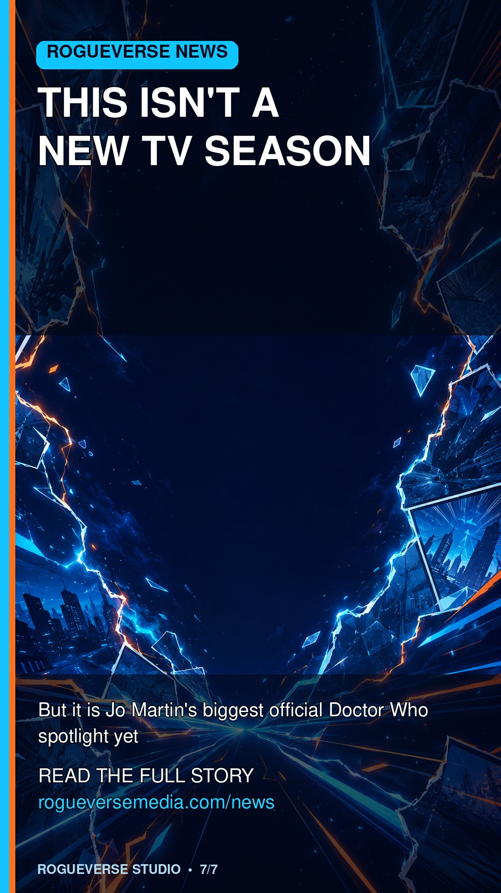

OUR CULTURE / ENTERTAINMENT • AUGUST 3, 2026
Jo Martin's Fugitive Doctor Takes Center Stage in Doctor Who: Circuit Breaker
Big Finish has revealed the story, cast and release dates for Full Circuit and Short Circuits, the audio finale of Doctor Who's official cross-platform event.

The television future of Doctor Who may still be regenerating behind closed doors, but Jo Martin's Fugitive Doctor is not waiting around.
On July 31, Big Finish revealed the story, cast and release details for its final chapters of Doctor Who: Circuit Breaker, the official cross-platform Whoniverse event unfolding across comics, books, games, websites and audio dramas. The main event is Full Circuit, a 127-minute full-cast audio drama arriving September 22, 2026.
Written by Robert Valentine, Full Circuit brings the Fugitive Doctor together with Osgood, Andrew Turner and Kate Lethbridge-Stewart as one final object begins appearing at the top of UNIT Tower. This one is not simply another corrupted artifact. It is a “Time Bomb” capable of creating a dark future for every incarnation of the Doctor.
That hook gives Jo Martin's Doctor a role she has deserved for years: not a mysterious side note in somebody else's story, but the Time Lord standing between the entire history of the character and disaster.
The announced cast includes Jo Martin as the Fugitive Doctor, Ingrid Oliver as Osgood, Jemma Redgrave as Kate Lethbridge-Stewart, Omari Douglas as Andrew and Dan Starkey in a role that has not yet been fully identified. Big Finish says more cast names will be announced.
The audio finale will be followed on September 24 by Short Circuits, two 30-minute audiobook stories read by Starkey. “Battleships” follows the Conductor, the tactical mastermind behind the larger crisis. “Get Rich or Die Trying” digs deeper into Andrew's story after a supposed time-travel device throws him back to the Jurassic period.
What exactly is Circuit Breaker?
The BBC Studios event began June 25 and places Jo Martin's Doctor at the center of a reality-threatening mystery. Strange objects connected to different Doctor incarnations have been pulled into UNIT's Black Archive carrying a corrupted energy signature. The trail has already crossed the Daleks, Cybermen, Sontarans and a rogue Weeping Angel through stories released by Titan Comics, Doctor Who Magazine, BBC Audiobooks and other partners.
Upcoming chapters include Dawn of the Daleks on August 4, the game chapter Castling on August 6, the online story Don't Blink! on August 17, Janelle McCurdy's The Doctor and the Three Witches on August 20, and Jo Martin's BBC Books novel The Kaleidoscope on September 3.
Important: this is not a new TV-season announcement
The July 31 reveal is meaningful, but it does not confirm the next television Doctor or a new BBC season. In June, the BBC announced that the previously planned 2026 Christmas special would not move forward and that production of the next phase of Doctor Who would be put out to competitive tender. The BBC still owns the franchise and says it is committed to its long-term future. A separate animated series for CBeebies remains in production.
So no, the TARDIS has not suddenly landed back on the television schedule. But Full Circuit is still a major win for Jo Martin's incarnation. While the main show searches for its next era, the Fugitive Doctor is finally being trusted to carry a full-scale event—and possibly save every Doctor who comes after her.
The seven-card RogueVerse breakdown






Release information
- Doctor Who: Circuit Breaker — Full Circuit: September 22, 2026; 127-minute full-cast audio drama.
- Doctor Who: Circuit Breaker — Short Circuits: September 24, 2026; two 30-minute audiobook stories.
- Both releases are available to preorder directly from Big Finish.